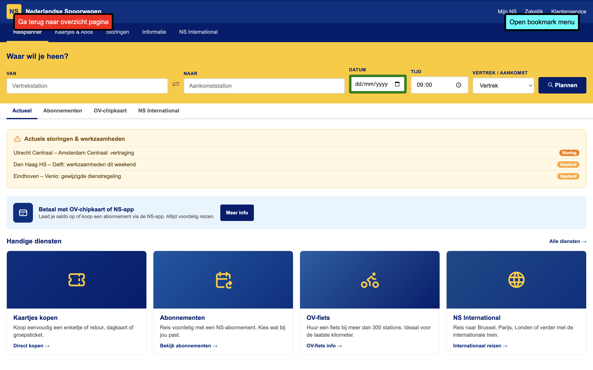
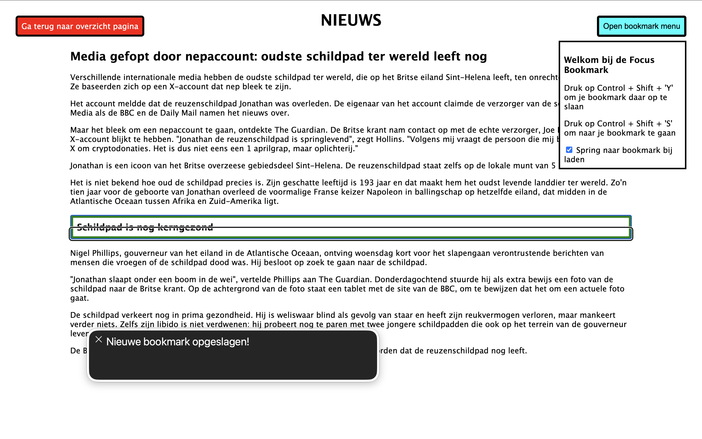
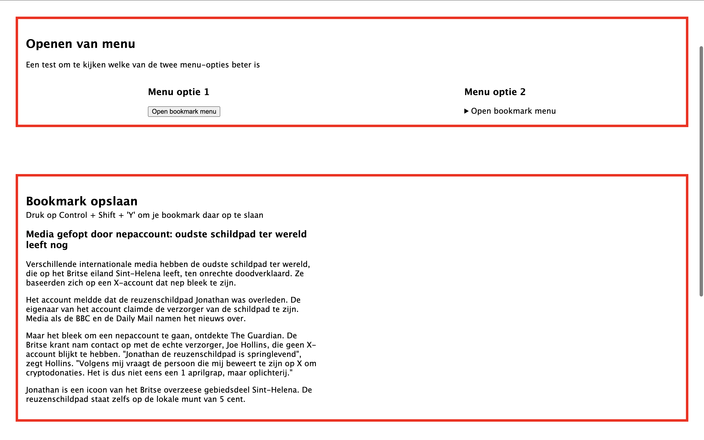

De opdracht


Bij HCD maakte ik een website voor één specifiek persoon met een beperking: Berend, die slechtziend is. Wat me opviel was dat hij aan het begin vooral sprak namens de hele slechtziende community in plaats van voor zichzelf. Gelukkig begon hij dat steeds meer te doen naarmate we hem aanmoedigden, en dat maakte de testmomenten veel waardevoller. Ik heb echt geleerd hoe belangrijk het is om toegankelijkheid serieus te nemen, en ik ben blij dat daar regelgeving voor bestaat. Wat ik ook fijn vond was het steeds opnieuw testen, ik merkte dat dat echt het verschil maakt. Je bouwt iets, test het, past het aan, en het wordt elke keer beter. Ik had een tab bookmark gemaakt waarbij Berend via shortcuts kon opslaan waar hij was gebleven op de website. Dat vond ik een van de waardevolste dingen die ik tot nu toe heb gemaakt, en ik zou het ooit nog leuk vinden om er een Chrome extensie van te maken.

Wat zou ik anders doen
Als ik het opnieuw zou doen zou ik vanaf het eerste gesprek met Berend gerichter vragen stellen over zijn eigen gebruik, en niet wachten tot hij zelf dat zelf doet, ookal is die kennis ook belangrijk. Hoe eerder je die persoonlijke inzichten hebt, hoe beter je kan bouwen voor hem.